Любимый браузер, где проходит 99% отладки
кода. Максимально удобный и функциональный инструмент для
фронтенд-разработчика, куда постоянно добавляются всё новые и новые возможности. Если функциональности
не
хватает,
её всегда можно расширить плагинами.
PerfectPixel - плагин для проверки того, насколько
вёрстка близка к макету. (Поподробнее поговорим в будущих уроках)
Check My Links - просматривает страницу и выделяет
ссылки, которые не работают, ведут на нерелевантную страницу и т. д. Удобная функция: коды
HTTP-ответов и полные URL-адреса неработающих ссылок публикуются в журнале консоли (Ctrl+Shift+J).
2 | Visual Studio Code
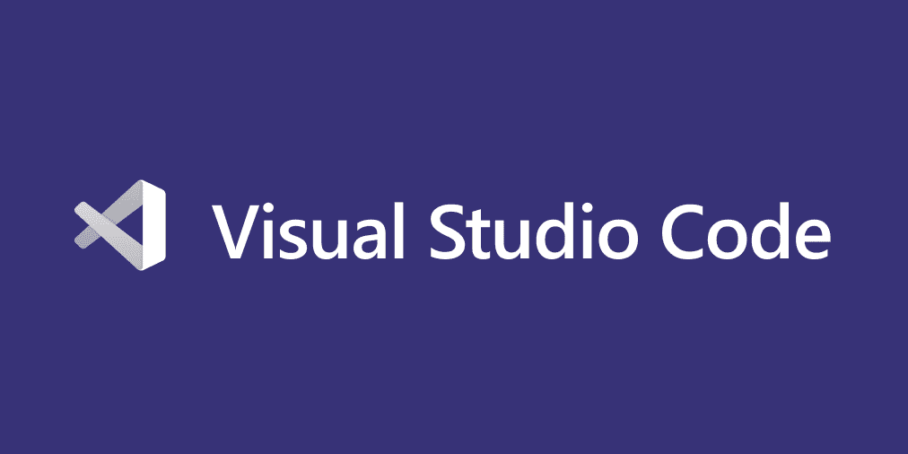
Бесплатный, мощный, очень популярный, с кучей дополнений редактор кода. Даже фейсбук выбрал его в
качестве основного редактора. Сегодня речь пойдет о редакторе кода Visual
Studio Code или просто VS
Code.
Далее устанавливаем эту программу (думаю с установкой сами разберётесь, но если будут вопросы,
пишите мне)
Далее нам надо устоновить некоторые плагины, для удобства. Название следующих плагинов пишем туда,
где указано на рисунке 1.
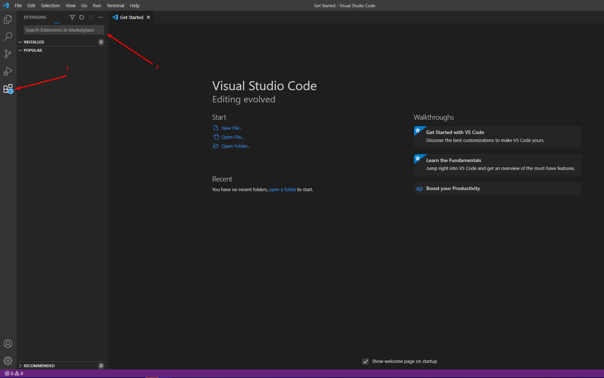
(Рис. 1)
Плагины
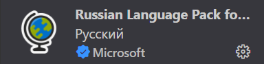
Russian
Language Pack for Visual - нужен для того, чтобы русифицировать VS Code.
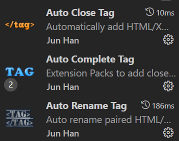 Auto Close Tag | Auto Complete Tag | Auto Rename Tag | -
поможет с написанием
кода, поможет быстрее дополнять и менять код.
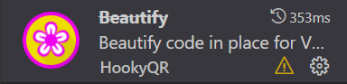
Beautify -
расширение позволяет форматировать html-, js-, css-, JSON- и sass-код. Параметрами
форматирования можно управлять. Это расширение является надстройкой над стандартной системой
js-beautify и позволяет разработчику форматировать код именно так, как ему нужно.
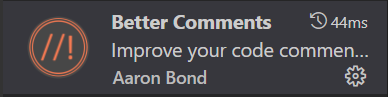
Better
Comments - расширение позволяет расширить возможности по работе
с комментариями. В частности, оно позволяет делить комментарии на категории. Это могут
быть уведомления, запросы, списки дел, примечания.
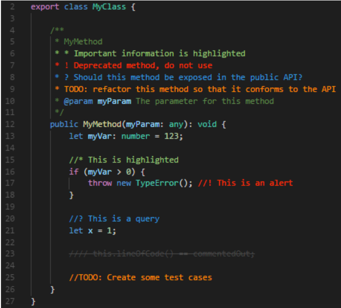
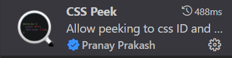 CSS
Peek -
с этим плагином вы можете отслеживать определения CSS классов и id таблиц стилей. Для этого
просто достаточно кликнуть правой кнопкой мыши на селектор в вашем HTML файле и
воспользоваться функцией Перейти к определению или Подсмотреть определение.
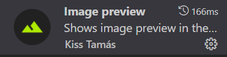
Image Preview
-
если в вашем коде уже присутствуют ссылки на какие-то изображения/иконки, то данный плагин
покажет вам их в маленьком окошке слева от порядкового номера строки. Пригодится
верстальщикам, чтобы не путаться во множестве иконок.
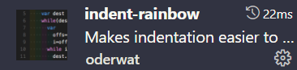
Indent Rainbow
-
нельзя пройти мимо расширения под названием Indent Rainbow. За счет расширения вы получаете
цветовое оформление для отступов внутри проекта. Каждый отступ выделяется своим цветом и вы
никогда не запутаетесь в коде.
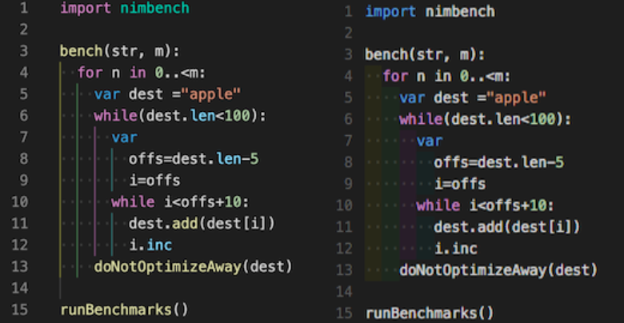
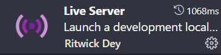
Live Server
-
предоставляет возможность любому запустить локальный сервер для своего проекта.
Для запуска сервера вам достаточно установить расширение, а далее внутри нужного файла
нажмите правой кнопкой мыши и выберите опцию «Open with Live Server». Большим плюсом сервера
является его автоматическая перезагрузка. Вы можете писать код, сохранять файл, а сервер
обновиться автоматически в соответсвии с кодом внутри файла.
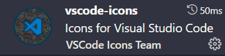
VS Code Icons
- за счет плагина VS code Icons все ваши файлы, в том числе папки, будут
обладать иконками в зависимости
от кода что прописан внутри них. Этот плагин добавляет крутую визуализацию внутрь ваших
проектов и помогает вам быстрее
ориентироваться среди сотен
различных файлов и папок.
Переходим в настройки VS Code | Файл ⇨ Настройки ⇨ Параметры ⇨ Находим Default
Formatter и выбираем там Beautify (плагин, который ранее устанавливали) ⇨ устанавливаем птичку
Editor: Format On Paste и Editor: Format On Save
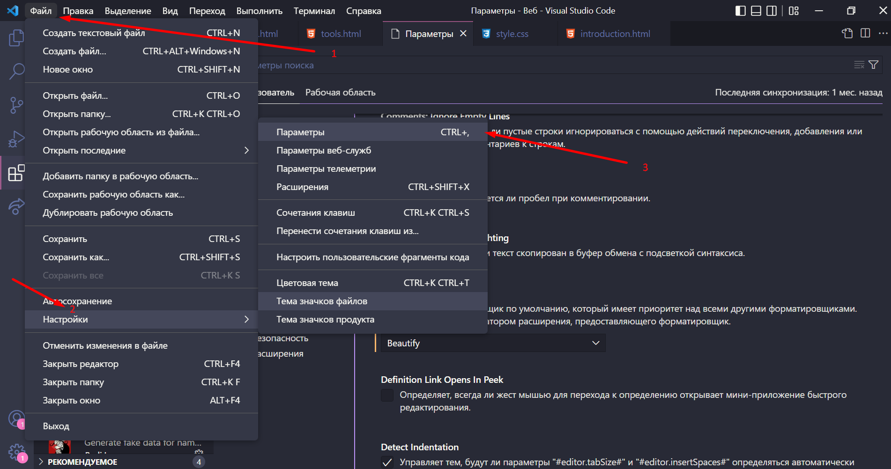
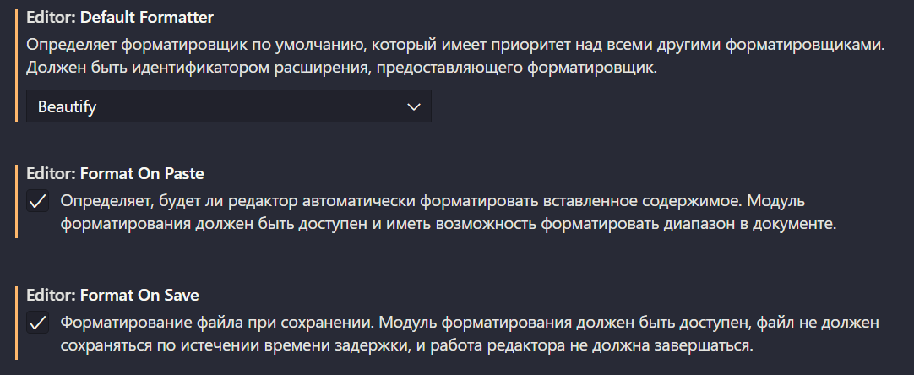
3 | ColorMania
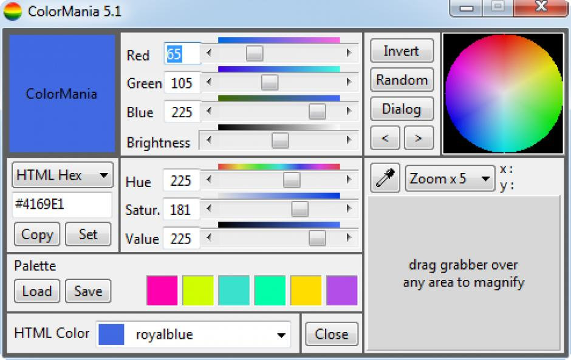
Устанавливаем ColorMania, с помощью которого сможем узнавать любые цвета на любых сайтах.
GIT – это самая популярная распределенная
система контроля версий и управления исходным
кодом. GIT был спроектирован и разработан
Линусом
Торвальдсом для разработки ядра Linux. GIT
поддерживает
нелинейную распределенную разработку, позволяя нескольким участникам одновременно работать над проектом.
В этом руководстве объясняется, как установить последнюю стабильную, предварительно упакованную версию
Windows, используя соответствующие менеджеры пакетов. GIT также может быть скомпилирован из исходного кода и
установлен в любой операционной системе.
Чтобы установить GIT на Windows, вам
нужно
скачать установщик с сайта GIT :